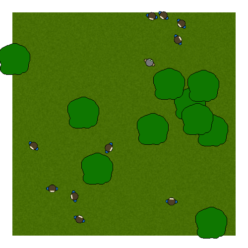

KEVIN IDZIK
HUMANS VS. ZOMBIES
I worked on Humans vs. Zombies on for an Interactive Media class. Humans vs. Zombies presents the user with several humans and a zombie in a park setting. Both parties are confined in the park and must avoid the trees within it, feats achieved using different flocking algorithms. The zombies chase down the humans, while the humans futilely attempt to flee the zombies. Users can influence this simulation, using the left mouse button to add more humans, and the right mouse button to add more zombies. Pressing spacebar will also allow you to see the different vectors coming off of each flocker. If you'd like to experience this for yourself, two Windows executables are provided below. Java is required to run the executables.
